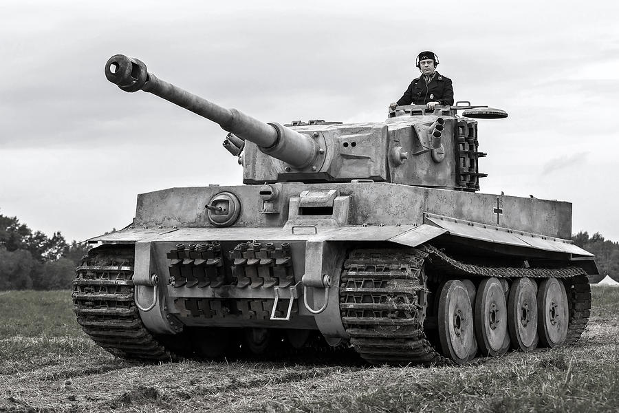

p2
Niemiecki czołg

Panzerkampfwagen VI Tiger, potocznie Tygrys to niemiecki czołg ciężki z okresu II wojny światowej. Uzbrojony w armatę kalibru 88 mm.
"Powrót do strony głównej"
Czołg w akcji
Nastepny czołg